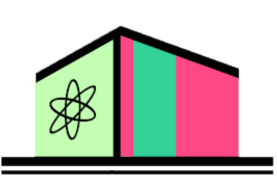
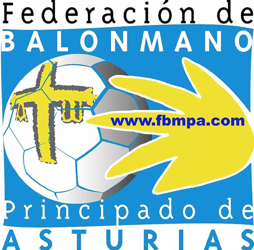

Sobre mi
¡Hola!
Mi nombre es Antonio y nací en Oviedo, la capital del Principado de Asturias, el 3 de marzo del 2000. Aunque mis raíces también pertenecen a la provincia de León, donde he tenido el placer de pasar la gran mayoría de mis veranos, en un pequeño pueblo al sur de la Bañeza: San Felix de la Valderia. Cuando era pequeño, quería ser futbolista profesional y astronauta, tal vez ambas al mismo tiempo. Pero al final descubrí que donde más destacaba era trasteando, así que me involucré en actividades extraescolares en mi colegio de primaria sobre robótica, donde entré en contacto por primera vez con la programación. Ocho años después, ingresé en el Grado de Ingeniería Informática del Software en la Universidad de Oviedo, y actualmente me encuentro trabajando como desarrollador de software mientras estudio el Máster de Ingeniería Web en la misma universidad.
Contacto
 Github
Github
 LinkdIn
LinkdIn
 Twitter
Twitter
 asuarezcrespo13@gmail.com
asuarezcrespo13@gmail.com
Títulos Académicos
- IES Aramo - Bachillerato Científico Tecnológico.
- EII Uniovi - Graduado en Ingeniería Informática del Software
- EII Uniovi - Master de Ingeniería Web (en proceso)
Otros
- FBMPA - Título Técnico Especialista en Balonmano I
- EII Uniovi - IT Research Summer Camp 2022